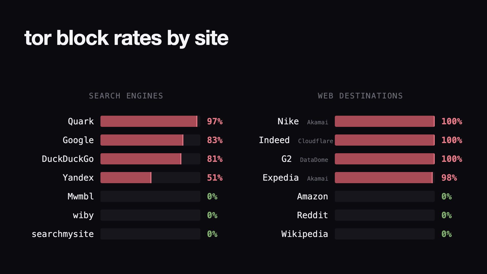
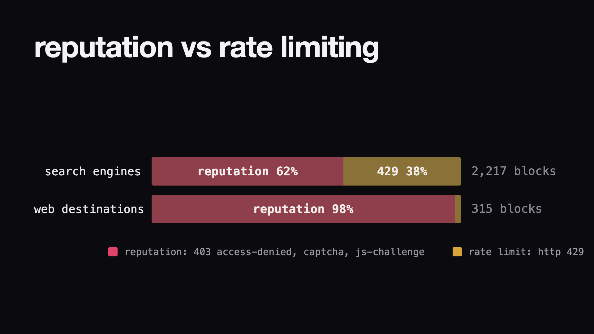
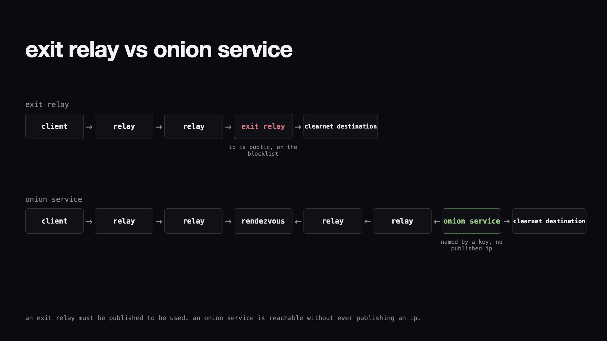
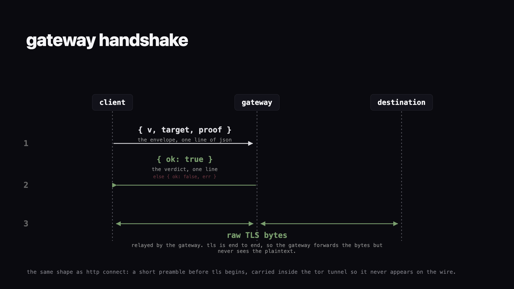
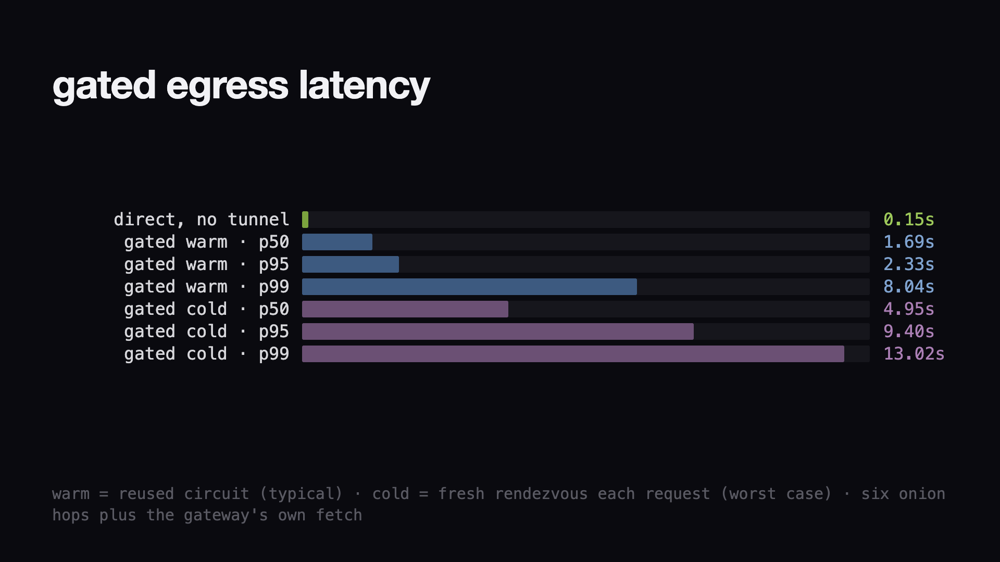

Research preview
A small grove for local AI.
Access-gated HTTPS tunnels through Tor onion services.
Research note · August 2026
Shade Tree is an experiment in carrying HTTPS tunnels through Tor onion services. A node admits each tunnel with a rate-limited proof of membership, without asking the client for an account or a stable identity. The design, measurements, and unresolved tradeoffs are documented below. Code at dmarzzz/shade-tree-node.
Implementation note. The research note below records the first prototype and its measurements. The current implementation speaks Shade Tree protocol v4 and adds signed fleet discovery plus optional onchain admission. For current wire behavior and security boundaries, use the protocol and threat model in the repository.
In 2016 Cloudflare, the company whose machines stand between a large fraction of the web and anyone wishing to read it, published its accusation of Tor, titled “The Trouble with Tor”: 94 percent of what arrives from the Tor network is malicious. On that claim it put CAPTCHAs and challenges in front of Tor traffic by default, for every customer at once. The Tor Project answered in kind, “The Trouble with CloudFlare”, and posed a modest empirical question, by what method was this 94 percent counted. A decade later it has no answer, and many still report getting blocked when going through Tor. In particular, those in the private agentic community report that while using SearXNG, a metasearch engine with built-in Tor support, they still get blocked. The academic literature has a name for this condition, fate sharing: everyone behind a shared address inherits the penalty that any one of them earned.
In this post we show a simple reproduction of an agent being blocked when using SearXNG over Tor. We then present the design and implementation of a candidate solution: an access-gated onion service that admits requests on a zk proof of membership, rate-limited with a rate-limiting nullifier (RLN). The open problem underneath is pricing the burn of the shared IP when anonymity forbids attributing it to any member, which reduces to a spent set no single party is trusted to keep.
Blocking Tor exit nodes programmatically is easy, because Tor publishes the full list of exit IPs itself: the firewall and CDN vendors ingest it as a live feed that updates as exits rotate, so banning all of Tor is a checkbox. The folklore is easy to check directly. I fetched the same real pages over a Tor exit, a home IP, and a datacenter IP, same client and same request rate, and recorded the HTTP status each site returned, so the only variable was the address I arrived from. The Tor-arm method and scripts are in the repo. At the request level, over the same 36 sites, the home IP was blocked 8.3 percent of the time, the datacenter IP 16.7 percent, and Tor 17.1 percent. Each non-Tor lane is one address on one day, so the datacenter number may partly be a DigitalOcean blocklist artifact. The experiment also separates two layers that can both block: the destination you are trying to reach, and the search engine you use to find it. The search engine sits a layer earlier, so Google can block you before you even know your destination. For a small sample size, 36 web destinations and 6,024 search queries over about 50 Tor exits, the web-destination result is mostly bimodal, with a thin middle tier between 4 and 27 percent. The sites that wall Tor at 90 to 100 percent are mostly fronted by commercial anti-bot vendors, Cloudflare, Akamai, or DataDome, and the rest block almost none. The search-engine arm is messier, its 24 engines spread from fully open to Google’s 83 percent.

nike, indeed, and g2 wall off 100 percent of tor traffic and google blocks 83; amazon, reddit, and the independent engines block none. a single “percent of tor blocked” number is just the mix of the two.
Our methodology has one blind spot: a Tor exit is a single address carrying many users at once, and we cannot isolate whether someone else was hitting the same destination from the same exit during our run. An observed block could therefore be rate limiting of a busy address rather than a judgment of the address itself, and the status code tells the two apart. Call an IP’s reputation the subjective score a destination keeps for an address, built from everything that address has been seen doing before. A 429 says the address is sending too many requests right now and should slow down. A 403, a CAPTCHA, or a JS challenge says its reputation is bad enough to refuse it outright, no matter how slowly it asks. The ambiguity weighs hardest on the search arm, where SearXNG sends every query to every engine, so each engine sees the exit’s whole query stream even though our own footprint was held to five jittered queries per exit. Classified by status code, search-engine blocks are roughly two-thirds reputation and one-third rate limit, against about 98 percent reputation for web destinations.

every block, classified by kind and split by arm: reputation (403, captcha, js challenge) against rate limit (429). the sites an egress actually has to reach block almost purely on reputation.
The literature defines this problem of sharing an IP’s reputation as the fate sharing problem. Khattak and coauthors named it in 2016: “Some blocks specifically target Tor, while others result from fate-sharing when abuse-based automated blockers trigger due to misbehaving Web sessions sharing the same exit node.” Unfortunately, at this point it may not even matter whether you actually share fate with malicious traffic over an exit node, since many operators block the traffic automatically through their CDNs. The point is proven further by Singh and coauthors, who found that even conservative exit policies do not keep exit relays off the blacklists. The fate sharing problem may have created an irreversible sealed fate problem for Tor. The rest of this post outlines a mechanism that shrinks fate sharing from the whole Tor network to a membership set you can price, and shows what it still cannot attribute.
Today the cost of sybiling a Tor exit is close to zero: identities are free and requests are free, so one abuser, or one abuser wearing a thousand fresh identities, can poison a shared IP at no cost to themselves. There are a few ways to attach a cost:
For this proof of concept we take the first path. The goal is narrow: a live egress that plugs into the Tor network, reachable by routing through Tor, and passes traffic to the clearnet only for requests carrying a zero-knowledge proof of membership in a set, rate-limited per member with RLN. To get there we deliberately put off a pile of protocol design decisions. The membership set is hard coded rather than maintained by onchain staking, so admission stays an explicit trust root. There is no payment layer, though one would slot in as an extra per-tunnel check exactly where the rate limit sits today. We wanted a working system first, and the harder design questions it raises are the subject of the last section. Below we describe the two components of the design, then the results of deploying it.
Modifying a Tor exit node to accept something like a zk proof is not possible within the Tor protocol as deployed, for two reasons:
Tor offers another, lesser known kind of node for almost this exact reason: the onion service.

network flow diagram of a Tor exit relay versus a Tor onion service reaching the same clearnet destination.
An onion service has no exit at all. Where a normal circuit is three hops ending at an exit relay that talks to the destination in the clear, an onion service is named by a public key, and the .onion address is that key. The client builds a three-hop circuit to a rendezvous relay, the service builds its own three-hop circuit to the same relay, and the rendezvous splices them together. That makes six hops in total, with no single relay seeing both ends and neither side ever learning the other’s IP. It is two parties meeting at a neutral spot that neither one picked. And because the service is a key rather than an address, it never appears in the directory consensus the way exits do, so there is no published IP to put on a blocklist.
The gateway is a v3 onion service running on a box with a single clean IP. A member connects to the onion address over Tor, the gateway forwards the traffic to the clearnet from its own IP, and the destination sees one ordinary address that appears on no Tor list. The tunnel carries one TLS connection to port 443, end to end; the gateway learns the host and port, never the content. That IP stays clean for exactly as long as the members behind it keep it clean, which is what the gate, a zk membership proof described in the next subsection, is for.
The gate has to do two things that sound contradictory: decide whether a request comes from an allowed member, and hold each member to a rate budget, all without learning which member it is talking to. The first half can be solved with a Semaphore group; ring signatures or a bespoke credential scheme could express the same membership claim, but Semaphore ships the proof and the nullifier we need in one audited, widely deployed package. The set of allowed users is a Merkle tree whose leaves are identity commitments; each member holds a secret, and their leaf is a hash of it. To pass the gate, a client proves in zero knowledge that it knows the secret behind some leaf of the tree, without revealing which leaf. Proof values are not literally identical: they carry a public root, nullifier, and signal commitment. Under the proof assumptions, those values hide which eligible leaf inside the revealed root was used.
The second half comes from the public outputs of the RLN proof. A private message slot produces a nullifier scoped to the current epoch. Two properties follow:
Together the two halves resolve the contradiction the gate opened with: it admits only members and meters each one, without ever learning which member it is serving. This is the RLN idea, or exactly its counting half: the Shamir-share slashing that completes RLN activates once there is a stake to slash.
With the proof defined, let’s look at how it travels. The client and gateway speak a small protocol of their own, no HTTP and no headers, where the proof is the entire identity layer. Every request opens with a single line of JSON we call the envelope:
{
"v": 1,
"target": "www.google.com:443",
"proof": {
"merkleTreeDepth": 3, // size parameter of the tree, same for every member
"merkleTreeRoot": "18939…", // commitment to the whole set, same for every member
"message": "1",
"scope": "20638", // the current epoch number
"nullifier": "13974…", // hash(secret, epoch): this member's pseudonym for the epoch
"points": ["632…", "497…", "…"] // the zk proof itself, ~0.9 KB
}
}Nothing in the envelope narrows down who sent it. The root and the depth describe the set, not the member (depth 3 caps the set at 2^3 = 8 members, a PoC toy; the Discussion treats depth as a privacy parameter); every member’s envelope carries the same values, and the root is simply what the gateway compares against its own copy. The one member-specific field is the nullifier, and it is a pseudonym that expires with the epoch.
The whole exchange is three moves on one connection, the same shape as HTTP CONNECT: a short preamble before TLS begins, so TLS stays end to end, and the preamble is never visible on the network because it rides inside the Tor encryption.

sequence diagram of the gateway handshake between the client, gateway, and destination.
To admit a request, the gateway runs five checks in order:
All five must pass; anything else gets an error verdict and a dropped connection, so the gate fails closed by default. The cost is lopsided on purpose. Generating a proof is the expensive step, but the client does it about once per epoch and caches the result, so every request in that epoch reuses one proof. The gateway pays only the verification, which is the cheap side of the asymmetry and is all that sits in the hot path.
There are a few improvements to this protocol we would need to make to take it to production, but for the PoC they are not needed. These are:
message field to the target, so an
envelope cannot be replayed for a different destination within its
epoch. Today the proof commits to the set, epoch, and nullifier but not
the target, and we lean on the Tor tunnel instead, since the envelope
never exists outside it.We deployed the full
open-source system on a single DigitalOcean server. It runs as two
processes, which is just how a Tor onion service works, not a design
choice of ours: a Tor
daemon that publishes the onion service and handles the rendezvous
routing, and the gateway
itself, a small Node process that listens on localhost and does the
proof checks. Tor maps the onion address onto that local port, and the
gateway binds nothing public, so the box is reachable only through Tor.
The onion name is registered nowhere. On first start the Tor daemon
generates a v3 keypair and writes the .onion address, which
is that public key encoded as text, to a file that persists across
restarts. There is no DNS and no certificate authority, and nothing to
enumerate, because the address exists only as long as we hold the
key.
To use it, a member runs a small client that starts its own Tor and a local proxy, then sends ordinary traffic through it. Through that proxy we hit a whatismyip service, api.ipify.org, and it reported back the gateway’s DigitalOcean address, not the client’s. The destination sees the gateway IP rather than the client source IP. It may still identify or link a member through accounts, cookies, application identifiers, or traffic correlation. A thousand-request load test to Google then returned 1000 of 1000 with none blocked, which makes sense: this is a presumably fresh IP with no bad history, though DigitalOcean could have recycled it from a prior tenant, so for now the destination sees an ordinary address and lets it through.
Since the onion route doubles the hops, three from the client to the rendezvous and three from the gateway, so every request crosses six relays there and back instead of three, it is worth understanding how much worse the latency gets. People already report trouble browsing the regular internet over plain three-hop Tor, and this path is longer. We timed the same thousand requests to Google, and the median was 1.69 seconds against a 0.15 second direct baseline, with a p99 near 8 seconds from ordinary Tor circuit variance, and a one-hour soak that forced a fresh circuit on every request still held 99.90 percent success across 3903 requests. The gate itself is not the bottleneck: verifying a proof takes a median of 32.5 milliseconds on the gateway regardless of set size, a serialized ceiling of roughly 27 to 31 checks per second per core, and each proof is about 0.9 kilobytes on the wire.

latency of the 1000-request load test to google, warm (reused circuit) versus cold (fresh rendezvous each request). the six-hop path’s 1.69 second warm median is about four times the 0.43 second median we measured for a plain three-hop tor fetch (of a lightweight control page, not google), and about eleven times the 0.15 second direct baseline.
The PoC proved out our two core concerns: live Tor network integration and latency. For Tor integration, the only path we found was to go with an onion service, and we are able to hit the egress by going through a rendezvous point in the live Tor network. The additional hops from this approach are three on the way there and three on the way back over the typical query-then-return path through a Tor exit node.
Naturally, the next question after these results is: what modifications to this design do we need to make to deploy it to production? From a vibes level, we want something that roughly feels like Tor, latency and anonymity wise, but has a much lower block rate, ideally even zero outside of standard rate limits. Made precise, that vibe comes down to four properties, each stated against the adversary it actually holds against.
These are design goals for the system, not guarantees established by the research preview. You could name others, operator privacy, a fail-closed admission gate, data-minimization at the gateway, latency within a constant of Tor, but these four are the essentials this protocol stands or falls on. The first two are the anonymity Tor already gives; the last two are the reputation story it does not.
Two different sets matter. The membership anonymity set is the set of eligible leaves under the public root: its size and distribution govern how many members a valid proof could represent. Gateway diversity is a separate property: more independent operators spread destination and traffic observations, while a single or colluding operator can correlate the tunnels it serves. More gateways do not by themselves enlarge the membership set. Network-level correlation also depends on who can observe the Tor path and the egress. In particular, a well-known attack involves controlling entry and exit observations (Johnson et al., Users Get Routed, CCS 2013).
Therefore, topology, membership, and payment choices affect different parts of the privacy story. Committees and payment rails may expose new links or shrink the eligible membership set, while operator diversity changes how concentrated destination observations are. Ultimately the desired privacy level, as well as the shape of the traffic expected to go through it, should dictate the answer to these questions. For instance, Tor is much better for async GET requests than streaming Netflix over websocket. Our PoC was one node and no payment: a single gateway in front of a hard-coded membership, enough to prove the gate works and to measure the path. One gateway is one IP, one burn away from dead, and one observer of every prototype tunnel, so production cannot stay that small. From here the design space branches two ways.
So what’s the actual problem? An onion service is represented as a public key, and this public key is used to rendezvous with a specific gateway. The protocol or the users must coordinate some way of rotating the gateways they are sending requests through in order to maximize their privacy. The introduction of coordination across multiple gateways creates challenges for payments and resource allocation, and therefore more attack vectors for sybils, or more latency and complexity in the protocol. These two axes, topology and payment, are the design space.
A gateway here is one onion key in front of one clean IP, so the topology question is how many onion keys a member can rendezvous with and whose membership set stands behind each one, with the anonymity set growing as you read down. Each shape has a live precedent: Privacy Pass runs the single-verifier corner in production, Tor’s own bridge distribution is a federation of distributors each rationing their own pool (Lox adds anonymous trust levels to exactly that shape), and WAKU-RLN-RELAY runs a flat fleet of relays enforcing one shared RLN membership.
Of the three shapes, the flat fleet is the only one where adding an operator grows the crowd instead of splitting it, which is why the next version stays there. The cost is that a member’s budget now has to be counted across operators who do not trust each other, and that is the payment question.
Payment is about what admission actually consumes, and on a flat fleet the accounting gets strictly heavier as you read down. The problem is older than it looks: untraceable e-cash was catching anonymous double-spenders in 1988, and Compact E-Cash and periodic n-times anonymous authentication refined that into the same per-epoch anonymous budget that RLN enforces today. What is new here is the venue: the counter has to survive N mutually distrusting gateways rather than one bank.
What the fleet still needs is the spent set no single party may own, and the adjacent literature says it is buildable: spending from your own budget needs less than consensus, FastPay built real payments on exactly that observation, and Nym already ships double-spend protection for anonymous credentials across its gateways. The next version starts there: a fee counted once across a small fleet of three gateways over one deposit-contract set, with the burn priced per member rather than per tunnel.
The payment section above treats the distributed spent set as the price of the flat fleet. There is a design that refuses to pay it: a zk payment channel per member-gateway pair. The ZK API Usage Credits construction is fundamentally such a channel bound to one recipient, and the shape has a name in the literature: it is BOLT, the anonymous payment channel Green and Miers built for exactly this asymmetry, with RLN’s slash standing in for BOLT’s revocation tokens and watchtowers. Open a channel with each gateway and every gateway keeps its own channel state; nothing crosses between operators, because nothing is shared.
A channel is an escrowed deposit plus a state counter. To pay, the member proves in zero knowledge that it holds the current signed state with balance remaining, the gateway blindly signs the decremented state, and the payment proof rides the same envelope the membership proof rides today. The gateway learns that some member with an open channel paid, and cannot link the spend to the previous one. Double-spending an old state is punished rather than prevented: replaying a spent index leaks the member’s secret through the same Shamir-line algebra RLN already uses, and the deposit becomes slashable by anyone. Egress pricing is flat, so the refund machinery that dominates the LLM version of this construction, where costs vary by 100x, can be deleted whole.
The channels would be opened in batch at enrollment, all of them at once, funded through something shielded, because the funding edge is where the anonymity dies otherwise. A member who opens channels lazily on first use leaks its gateway affinities in the timing, and one who funds from a bare wallet links its whole gateway set through exchange KYC trails. BOLT’s paper says this plainly: the guarantees hold only if channels are funded with anonymized capital.
We swept the literature behind this fork, BOLT and zkChannels, the TumbleBit-to-Accio payment-hub line, Chaumian ecash from Chaum through Fedimint and the IETF credit-token drafts, the channel capital-efficiency work, and the formal-verification record, and the channel path carries three costs for this fleet.
The sweep also returned something better than a verdict: a simplification. With refunds deleted and every ticket priced flat, the credits construction collapses into the stack this post already runs. Prove membership, prove one counter inequality, spend index times price stays inside the deposit, and emit one more nullifier. The spent set that checks that nullifier needs no consensus, because RLN prices its inconsistency: a double-spend across two gateways is caught when they reconcile, the secret falls out of the algebra, and the deposit is slashed, so the async window is bounded by the deposit rather than trusted away. Fedimint runs this shape today with a BFT spent list; Nym runs it with deferred reconciliation across its gateways. For a fleet whose requests cost the same and whose adversary is the operator, the distributed spent set turns out to be the cheap path, and channels remain the right tool where they were invented: one counterparty, variable costs, no fleet to gossip. The open problems that actually gate the next version are narrower and better than before: the bound relating gossip lag to the maximum extractable double-spend, the self-slash race where a member burns its own deposit before the gateway sweeps earned balance, and the deposit-edge KYC leak.